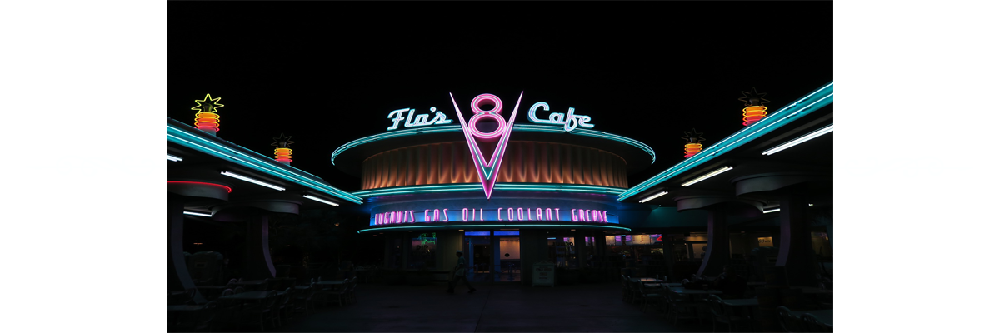

Café Racer
A café racer (/ˈkæf reɪsər/ KAF ray-sər, or more commonly /ˈkæfeɪˌreɪsər/ KAF-ay ray-sər) is a lightweight, lightly powered motorcycle optimized for speed and handling rather than comfort – and for quick rides over short distances. With bodywork and control layout recalling early-1960s Grand Prix road racing motorcycles, café racers are noted for their visual minimalism, featuring low-mounted handlebars, prominent seat cowling and elongated fuel tank – and frequently knee-grips indented in the fuel tank.
Img. Ducati Monster Sunshine
(pixabay)
Café Racer Origins
The term developed among British motorcycle enthusiasts of the early 1960s from Watford, and London, specifically the Rocker or "Ton-Up Boys" subculture, where the bikes were used for short, quick rides between cafés, in Watford at the Busy Bee café and the Ace Café in London. In post-war Britain, car ownership was still uncommon, but by the late 1950s the average Briton could now afford a car; so by the early 1960s the café racer's significance was that a bike had come to represent speed, status and rebellion, rather than mere inability to afford a car.
In 2014, journalist Ben Stewart described the café racer as a "look made popular when European kids stripped down their small-displacement bikes to zip from one café hangout to another." In 1973, American freelance writer Wallace Wyss, contributing to Popular Mechanics magazine, wrote that the term café racer was originally used derogatorily in Europe to describe a "motorcyclist who played at being an Isle of Man road racer" and was, in fact, "someone who owned a racy machine but merely parked it near his table at the local outdoor cafe."

Img. Flo's Cafe
(pixabay)
Configuration
In addition to light weight, a tuned engine and minimalist bodywork, the café racer typically features distinctive ergonomics. Dropped bars that are low, narrow handlebars (called "clip-ons") – enabled the rider to "tuck in", reducing wind resistance and improving control. Along with the rearward located seat, the posture often required rearsets, or rear-set footrests and foot controls, again typical of racing motorcycles of the era. Distinctive half or full race-style fairings were sometimes mounted to the forks or frame.
Mick Walker declared that the typical specification of an early café racer would be: swept-back pipes, low-mounted clip-on handlebars or 'Ace' bars, reverse cone megaphone mufflers, TT100 Dunlop tires, rear sets, and larger carburetors (often with inlet trumpet rather than air filters).
The bikes featured minimalist styling, engines tuned for speed and responsive handling. A typical example was the "Triton", a homemade combination of a Triumph Bonneville engine in a Norton Featherbed frame. A less common hybrid was the "Tribsa" which had a Triumph engine in a BSA duplex frame. Other hybrids café racers included the "NorVin" (a Vincent V-Twin engine in a Featherbed frame), and bikes with racing frames by Rickman or Seeley.
Img. Custom Cafe Racer
(pixabay)